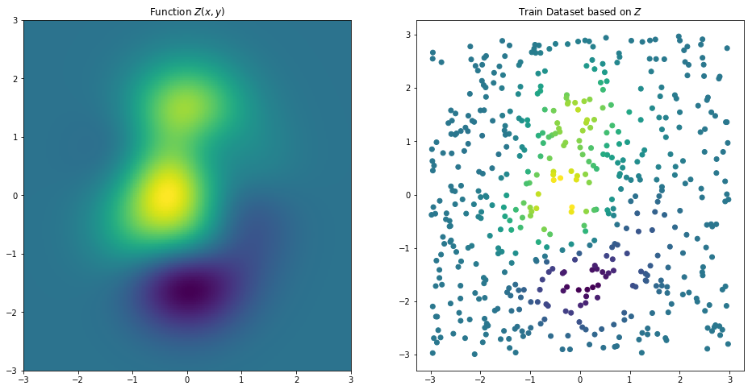
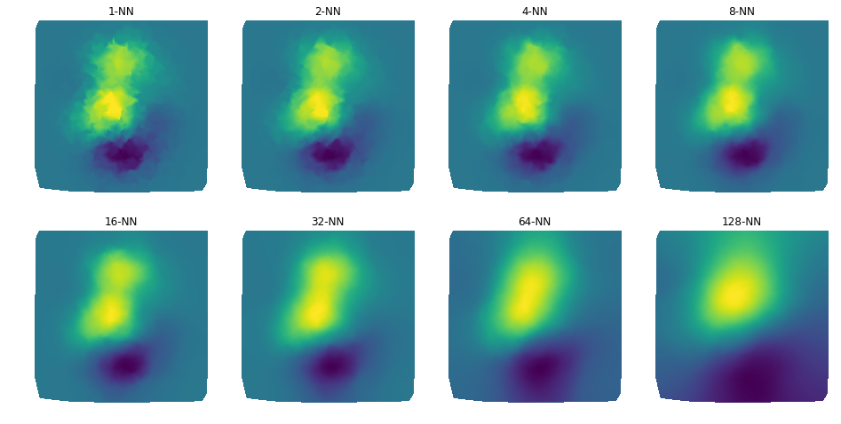

Overview and implementation of k-Nearest Neighbor Regression.
%matplotlib inline
import matplotlib
import matplotlib.pyplot as plt
import numpy as np
from kNN__utils import *
# Synthetic data 3 and 4
X, Y, Z = synthData3()
Q1, Q2, VL = synthData4()
Q = np.array([Q1, Q2]).T

class kNNRegr(Distance):
def __init__(self, k=1):
super(kNNRegr, self).__init__()
self._k = k
self._q = None
self._v = None
def fit(self, X, y):
self._q = X
self._v = y
def pred(self, P):
y, NNs = [], []
for i, p in enumerate(P):
dist = self.distance(p, self._q)
odist = np.argsort(dist)[:self._k]
fdist = np.ravel(self._v[odist])
ndist = dist[odist]
ndist /= np.sum(ndist)
y += [np.sum(fdist*np.flipud(ndist))]
NNs += [odist]
return np.array(y), np.array(NNs)
%%time
# Synthetic data 5
P, xi, yi = synthData5()
k = 128
knnr = kNNRegr(k)
knnr.fit(Q, y=VL)
y_, NNs = knnr.pred(P)
Wall time: 234 ms
